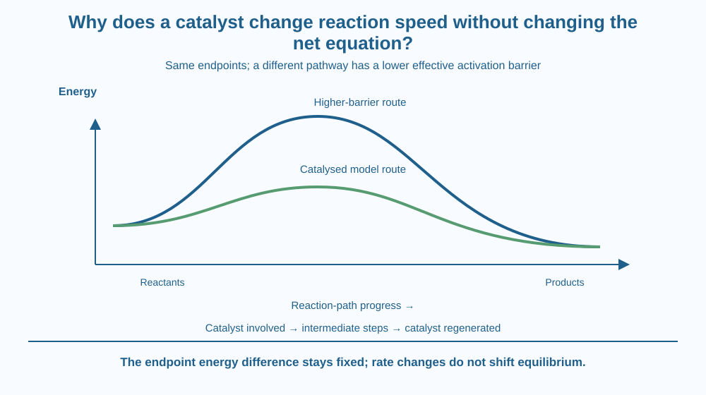

Explain how a catalyst changes a reaction pathway without changing the overall reactants-to-products equation. Use an energy-profile model to separate activation barrier, reaction energy change and equilibrium. Work only with drawings; no chemical reaction is needed.
Two accounts of a reaction can list the same starting materials and the same final products, yet one route can proceed faster under suitable conditions. The difference need not be extra reactant added to the net equation.
A catalyst can participate in intermediate steps and be regenerated later. Looking only at the overall equation hides those steps and therefore hides the reason the rate changes.
The useful question is how a process can take a different route between the same endpoints. The destination and the difficulty of reaching it are related ideas, but they are not the same quantity.
A reaction often requires particles to reach a sufficiently energetic arrangement before products can form. The activation energy is a useful measure of the energy barrier associated with a pathway. A high barrier can make a process slow at a given temperature.
A catalyst provides an alternative reaction mechanism with a lower effective activation barrier. More reacting particles can then use the pathway under suitable conditions, increasing the rate. The catalyst does not merely push every particle faster by making the whole mixture hotter.
The alternative mechanism can contain several steps and intermediates. A catalyst may temporarily bind a reactant or form a short-lived species, then be regenerated in a later step. Being absent from the net consumption does not mean being chemically uninvolved.
When the step equations are combined, the catalyst cancels from the overall reactant-to-product accounting because it is regenerated. An intermediate also cancels, but it is formed during the mechanism and used later; the catalyst is supplied and recovered. Their roles differ even though both can disappear from the net equation.
An energy-profile drawing compares the same reactant and product states. The catalysed route has a lower relevant barrier, while the energy difference between those endpoints stays the same. The catalyst does not create an extra store of reaction energy by lowering the drawn hill.
For a reversible system at fixed conditions, catalysis can speed the approach to equilibrium without changing its position. It affects routes in both directions. It is therefore incorrect to claim that adding a catalyst alone makes the equilibrium favour a larger final proportion of products.
A simple one-hill sketch is only a teaching model. A real catalysed pathway can have several rises and valleys, with the slow controlling stages depending on conditions. Lower effective barrier is the key comparison, not a requirement that every mechanism have exactly one peak.
Catalysts are also specific to suitable reactions and conditions. A material that catalyses one process does not automatically accelerate every reaction in the same room. Surface availability, temperature and chemical environment can affect its performance.
Regeneration does not mean a real catalyst lasts forever. Contamination, surface changes or other deactivation can reduce activity. The ideal net equation describes its reaction role, not an unlimited service-life guarantee for an industrial component.
Draw a reactant energy level at the left and a product energy level at the right. Connect them first with a high peak and then with a lower pathway. Keep the endpoints identical in both drawings.
Label the climb from the reactant level as the activation barrier. Label the difference between starting and finishing levels separately. The second label must not shrink merely because the peak is lower.
Now add two or three small steps to the lower route. A catalyst marker enters one step and reappears after another. This shows why the detailed mechanism can change while the net equation retains the same overall material transformation.
The SVG compares two energy profiles with the same endpoints. The higher curve represents an uncatalysed model route and the lower curve a catalysed one. Labels distinguish barrier height from the unchanged endpoint difference.
A small step-chain below the graph marks catalyst involvement and regeneration. It is a conceptual pathway, not a recipe or a quantitative energy measurement.
The diagram does not use a stopwatch result or a percentage rate increase. No particular industrial catalyst loading is assumed. Its job is to make the changed route and unchanged net transformation visible together.

Chemical industries and biological systems use suitable catalysts to make useful transformations proceed at practical rates. In an Indian science classroom, that connection can be discussed without turning the lesson into a home mixing experiment.
Enzymes are biological catalysts, but this lesson does not repeat a digestion or cellular-energy pathway. The shared point is that a specific mechanism can offer a more accessible route while retaining the same overall transformation.
An industrial process still needs reactant supply, energy management and appropriate conditions. A catalyst is not a promise of zero energy use, perfect conversion or permanent equipment performance. Those claims require more information than the word catalysed.
Use paper, a pencil and two colours.
Keep the curves qualitative. Ask a partner whether moving only the peak changes the final-minus-initial energy difference. Then check that the catalyst marker returns instead of being consumed as a net reactant. No peroxide, metal powder, food enzyme or cleaning product is needed.
Why does a lower activation barrier fail to prove that more total energy is released? Use the shared endpoint levels to explain the distinction.
Now consider a reversible process that already sits at equilibrium. Why would a catalyst not by itself create a new product-favouring equilibrium? Your explanation should include the availability of faster routes in both directions, rather than imagining a one-way gate that changes the relative stability of the endpoints.
What does a catalyst provide?
Answer: B — The alternative mechanism can increase the rate under suitable conditions.
Why is the catalyst not consumed in the net equation?
Answer: C — Its participation in individual steps cancels when it is recovered overall.
At fixed conditions, what does adding a suitable catalyst do to a reversible system?
Answer: A — Catalysis changes the routes and rates in both directions, not the equilibrium position.
Create an energy-profile poster with a catalysed route, an uncatalysed route and identical endpoints. Add a two-step symbolic mechanism showing a catalyst entering and returning.
Write three claims the drawing supports and one it does not. Supported claims should concern route, rate and regeneration. An unsupported claim might concern a guaranteed equilibrium yield or an exact time saving. Avoid inventing numerical performance for an unspecified reaction.
A substance can be deeply involved in a reaction mechanism and still disappear from the net equation. That disappearance is an accounting result after intermediate steps are added, not evidence that nothing happened to it. The detailed pathway explains an effect the compact overall equation cannot show by itself.
A catalyst offers a lower-barrier pathway and is regenerated; it changes the rate and mechanism without changing the net equation, endpoint energy difference or equilibrium position.